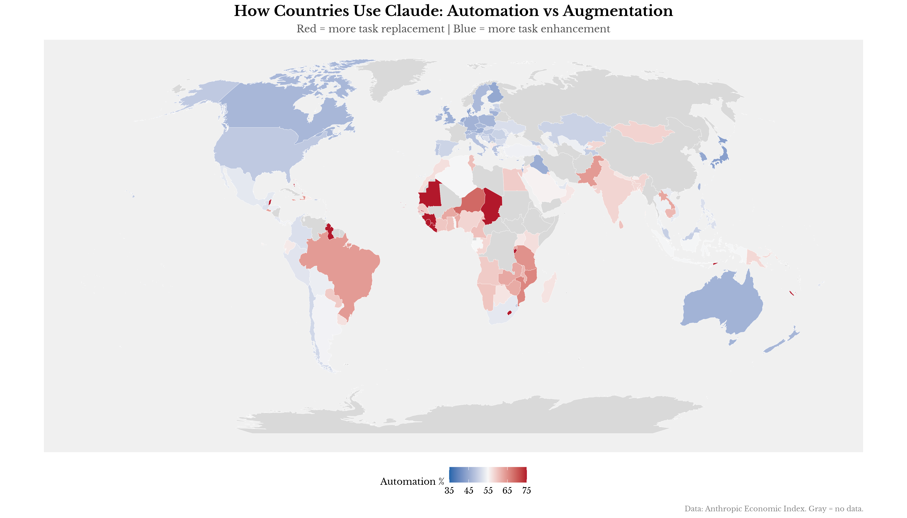

Patterns in the Anthropic Economic Index
Status: This is preliminary — mostly Claude-generated, vibe-coded and vibe-blogged over a weekend. Haven't shared with anyone yet. Not sure what I'm going to do with it.
Anthropic recently released their Economic Index—one of the first public datasets on actual AI assistant usage at the country level. I spent some time with it. Some patterns emerged that seemed worth writing up.
A caveat upfront: this is exploratory work—pattern-finding rather than hypothesis testing. The sample is small (127-150 countries depending on specification), the data source is one product from one company, and cross-country regressions have well-known limitations. I write up these patterns because they seem interesting and because comparable public data on AI usage is scarce, not because I'm confident in any particular coefficient.
One more thing to keep in mind: this is Claude data, not all AI. ChatGPT dominates the consumer market (~60% share vs Claude's ~3-4%). But the skew may be informative: Fradkin (2025) finds Claude is disproportionately a work-focused productivity tool, so this data likely captures the professional/productivity slice of AI adoption better than recreational use.
The report notes Claude usage tracks GDP, internet penetration, and governance quality. This is consistent with the technology diffusion literature (Comin & Hobijn, 2010): richer countries with better infrastructure adopt new technologies faster.
The more interesting question: which of these actually do independent work? They're all correlated with each other—GDP predicts governance, governance predicts R&D, R&D predicts education. The usual development cluster. Separating signal from multicollinearity takes some regularization.
I tested 23 indicators against Claude usage per capita: World Bank development variables, HDI, GDP volatility, and the routine task intensity index from Lewandowski et al. (2022). Table 1 shows the OLS results, with predictors added in an intuitive order: economic baseline (GDP), then infrastructure (internet access—the prerequisite for using Claude at all), then governance, then demographics.
| (1) | (2) | (3) | (4) | (5) | (6) | (7) | (8) | |
|---|---|---|---|---|---|---|---|---|
| Log GDP per capita | 0.748*** | 0.448*** | 0.107 | 0.038 | -0.039 | -0.095 | 0.113 | 0.096 |
| (0.047) | (0.075) | (0.089) | (0.083) | (0.081) | (0.081) | (0.106) | (0.104) | |
| Internet users (%) | 0.009*** | 0.009*** | 0.004** | 0.005*** | 0.006*** | 0 | 0 | |
| (0.002) | (0.002) | (0.002) | (0.002) | (0.002) | (0.002) | (0.002) | ||
| Regulatory quality | 0.277*** | 0.266*** | 0.233*** | 0.201*** | 0.076 | 0.053 | ||
| (0.048) | (0.044) | (0.043) | (0.043) | (0.055) | (0.055) | |||
| Fertility rate | -0.173*** | -0.11*** | -0.134*** | -0.194*** | -0.159*** | |||
| (0.035) | (0.037) | (0.037) | (0.043) | (0.044) | ||||
| Population 65+ | 0.017*** | 0.013*** | 0.005 | 0.008 | ||||
| (0.004) | (0.004) | (0.005) | (0.005) | |||||
| R&D spending (% GDP) | 0.071*** | 0.08*** | 0.08*** | |||||
| (0.026) | (0.027) | (0.026) | ||||||
| English proficiency (EF EPI) | 0.001* | 0.001** | ||||||
| (0) | (0) | |||||||
| Mobile subscriptions | 0.002** | |||||||
| (0.001) |
| (1) | (2) | (3) | (4) | (5) | (6) | (7) | (8) | |
|---|---|---|---|---|---|---|---|---|
| N | 127 | 127 | 127 | 127 | 127 | 127 | 90 | 90 |
| R² | 0.668 | 0.722 | 0.781 | 0.818 | 0.838 | 0.847 | 0.828 | 0.839 |
| Adj. R² | 0.666 | 0.718 | 0.776 | 0.812 | 0.831 | 0.84 | 0.814 | 0.823 |
Standard errors in parentheses. * p < 0.1, ** p < 0.05, *** p < 0.01
Column (1) shows the baseline GDP relationship. Column (2) adds internet access—which matters: you need internet to use Claude. But GDP remains significant after controlling for internet, suggesting the relationship isn't purely about infrastructure access. This matters for interpretation: the remaining GDP effect could reflect affordability (Claude Pro costs ~$20/month), skill composition of the workforce, or something else beyond mere connectivity.
Columns (3)-(6) add governance, demographics, and R&D. Fertility and aging add substantial explanatory power—the demographic variables do real work beyond the development cluster. The core model in columns (1)-(6) uses 127 countries; columns (7)-(8) restrict to the 90 countries with EF English Proficiency Index coverage.

The notable result: fertility rate appears to be the strongest predictor in this sample after regularization. Negative coefficient—lower fertility, higher Claude usage. This pattern holds after controlling for GDP, governance, and R&D.
What to make of this? Low fertility correlates with aging populations and labor scarcity, which might increase demand for productivity tools—Acemoglu & Restrepo (2022) document exactly this pattern for industrial robots. It could also proxy for something cultural about time orientation and technology adoption. Or it could be noise—127 countries isn't that many observations. I lean toward the labor scarcity story, but wouldn't bet heavily on it.
English proficiency (measured by the EF English Proficiency Index) also survives regularization with a positive coefficient. Countries where more people speak English use Claude more, which makes sense given the model's training but is worth quantifying. This variable captures L1 and L2 speakers combined—not just Anglophone countries—so the effect is broader than just native English speakers.
Variables zeroed out by LASSO: internet access, tertiary education, corruption control. They're correlated with the survivors but don't add independent signal.
LASSO tells us which variables survive regularization, but not how much of the explained variance each contributes. For that, we need Shapley values—a game-theoretic method that fairly allocates R² to each predictor by averaging over all possible orderings. This handles multicollinearity properly.

GDP alone accounts for the largest share of explained variance, but fertility and regulatory quality together contribute nearly as much. The demographic variables (fertility + aging) jointly explain about as much as governance. This suggests fertility isn't just noise—it appears to be doing real explanatory work independent of the development cluster.
Before going further, it's worth being explicit about the limitations:
Correlation, not causation. These are cross-sectional associations. Countries with low fertility use Claude more, but we can't say low fertility causes AI adoption. The relationship could run the other way, or both could be driven by something unmeasured.
One product, one moment. This is Claude data from one time period. ChatGPT has ~60% market share; Claude has ~3-4%. Patterns here may not generalize to other AI tools, and may not persist as the market evolves.
Small sample, many predictors. With 127 observations and 8+ predictors in the full specification, individual coefficients are noisy. The LASSO helps with variable selection, but standard errors should be interpreted cautiously.
Ecological fallacy. Country-level patterns may not apply at the individual level. A country with high automation rates may still have many users doing augmentation work—we're seeing averages, not distributions.
Time series would be more informative. A single cross-section can't distinguish between countries that adopted early vs. those that will catch up. Repeated measurements would help separate persistent gaps from timing effects.
Intensive vs. extensive margin. The data show usage per capita, but we can't separate the extensive margin (how many people use Claude) from the intensive margin (how much each user uses it). Claude Pro costs ~$20/month—a meaningful expense in many countries. If rich countries show higher usage, is that because more people can afford subscriptions, or because subscribers use it more intensively? Or is it skill composition—more knowledge workers whose tasks are Claude-relevant? The data can't disentangle these stories, though the surviving GDP coefficient after controlling for internet access suggests it's not purely about connectivity.
With those caveats in mind, some patterns are still worth noting.
Table 2 shows countries that deviate most from the fitted values in Column (6)—i.e., after controlling for GDP, internet access, governance, demographics, and R&D. This is more informative than simple GDP residuals, since we're asking: who outperforms conditional on observable fundamentals?
| Country | Residual | Anglo | ExSov | Small |
|---|---|---|---|---|
| Israel | 0.583 | Yes | ||
| Sri Lanka | 0.480 | |||
| Kenya | 0.414 | Yes | ||
| Iraq | 0.393 | |||
| Armenia | 0.380 | Yes | ||
| Ecuador | 0.375 | |||
| Pakistan | 0.345 | |||
| Bolivia | 0.342 | |||
| Montenegro | 0.336 | |||
| Panama | 0.323 |
| Country | Residual | Anglo | ExSov | Small |
|---|---|---|---|---|
| Turkmenistan | -0.652 | Yes | ||
| Uzbekistan | -0.546 | Yes | ||
| Papua New Guinea | -0.497 | |||
| Tajikistan | -0.439 | Yes | ||
| Azerbaijan | -0.398 | Yes | ||
| Tanzania | -0.368 | |||
| Japan | -0.337 | |||
| Burundi | -0.307 | |||
| Kuwait | -0.304 | |||
| Botswana | -0.303 |
The overperformer/underperformer lists hint at patterns. To formalize this, I coded three binary variables: Anglophone (English as primary/official language), Ex-Soviet (post-Soviet states), and Small open economy (population <10M, high trade/GDP). Then regressed the residuals from Column (6) on these dummies:
| Variable | Coefficient | Std. Error | p-value | |
|---|---|---|---|---|
| (Intercept) | -0.009 | 0.022 | 0.689 | |
| is_anglophone | 0.083 | 0.055 | 0.132 | |
| is_ex_soviet | -0.094 | 0.061 | 0.128 | |
| is_small_open | 0.047 | 0.051 | 0.356 |
Dependent variable: residuals from Column (6) model. N = 127, R² = 0.049
The Anglophone coefficient is positive and borderline significant (p ≈ 0.08). English-speaking countries use Claude more than fundamentals predict—unsurprising given Claude's English-first training.
The ex-Soviet coefficient is essentially zero, which hides interesting within-group variation. Armenia (+0.38), Georgia (+0.30), Moldova (+0.21) are among the biggest overperformers globally—countries with strong Soviet-era technical education and active tech diasporas. But Turkmenistan (-0.65) is the biggest underperformer among ex-Soviet states, dragging down the group average. That's mechanical though: you can't use Claude if you can't access it. When you exclude restricted-internet countries, the ex-Soviet STEM education story might show up more clearly.

This is where it gets interesting. BCG surveyed 20 countries about ChatGPT usage. I matched this to the Claude data.
Correlation between self-reported AI use and actual Claude usage: r = -0.43
Negative. India reports the highest ChatGPT adoption (45%) but has low Claude usage per capita. The pattern holds across emerging markets.
The obvious objection: ChatGPT ≠ Claude. Maybe there's product substitution—emerging markets use ChatGPT, not Claude. That's plausible. But the magnitude of divergence is still striking. There may also be survey response effects—Johnson & Van de Vijver (2003) document systematic cross-cultural differences in socially desirable responding.
The data sources aren't measuring the same thing, so I wouldn't push this too hard. But it's a pattern worth flagging for anyone forecasting AI adoption from survey data.

Ipsos tracks whether people feel "excited" or "nervous" about AI. Natural hypothesis: excitement predicts adoption.
Correlation between AI excitement and Claude usage: r = -0.6
Also negative. Thailand is 80% excited, low usage. Australia is 40% excited/69% nervous, high usage.
This is likely confounded by development level. Richer countries tend to be both more skeptical of technology hype and better positioned to use the technology. The skeptics with infrastructure outadopt the enthusiasts without it. Microsoft's AI Diffusion report (2025) documents a similar pattern: AI use in the Global North is roughly double that in the Global South, despite higher enthusiasm in developing economies.

This might be the most interesting finding. The AEI data classifies each conversation as "automation" (Claude does the task) vs "augmentation" (Claude helps with the task). I assumed this would be roughly constant across countries. It's not.
Correlation between GDP and automation rate: r = -0.83
This is a strong correlation for cross-country data—though as with the other findings, I wouldn't push the causal interpretation too hard. The pattern suggests poorer countries tend to use Claude to replace tasks; richer countries tend to use it to enhance them.
| Country | Automation % | Augmentation % |
|---|---|---|
| Pakistan | 64.1 | 35.9 |
| Brazil | 63.9 | 36.1 |
| Rwanda | 62.7 | 37.3 |
| Benin | 62.3 | 37.7 |
| Cambodia | 61.1 | 38.9 |
| Country | Automation % | Augmentation % |
|---|---|---|
| Japan | 43.3 | 56.7 |
| Norway | 43.9 | 56.1 |
| Denmark | 44.1 | 55.9 |
| South Korea | 44.5 | 55.5 |
| Finland | 44.6 | 55.4 |
| Quadrant | Countries | Avg Auto % | Avg GDP |
|---|---|---|---|
| High GDP + High Auto | 6 | 54.5 | $34k |
| High GDP + Low Auto (Augmenters) | 38 | 47.3 | $64k |
| Low GDP + High Auto (Substituters) | 38 | 57.1 | $6k |
| Low GDP + Low Auto | 6 | 49.1 | $14k |
The "Low GDP + High Automation" quadrant is the labor substitution story: Claude as a force multiplier for scarce skilled labor. The "High GDP + Low Automation" quadrant is the productivity enhancement story: Claude as a collaborator for already-productive workers.

The map shows the pattern geographically. Rich countries (North America, Western Europe, Australia) cluster blue—using Claude for augmentation. Parts of Africa and South Asia show higher automation rates. Eastern Europe is notably augmentation-heavy despite being a major services exporter.
This connects to a recurring debate in AI economics. Acemoglu and others emphasize automation and displacement; Brynjolfsson and others emphasize augmentation and productivity gains. The pattern here suggests both perspectives may have empirical support—but in different contexts. Automation-focused analyses may better describe AI's role in emerging markets; augmentation-focused analyses may better describe high-income contexts. The answer to "will AI replace or enhance workers?" might be "both, depending on where you look."

A few candidate explanations, not mutually exclusive. Can we separate them empirically?
Labor costs (GDP). Baseline story: in high-wage economies, the constraint is productivity per worker. In lower-wage economies, the constraint is capacity. GDP is the proxy.
Labor scarcity (aging). Countries with older populations have tighter labor markets, which might push toward augmentation (making existing workers more productive) rather than automation. Population 65+ is the proxy.
Task composition (RTI). Users in emerging markets may disproportionately be doing tasks that are more automatable. We can test this with the IMF's Routine Task Intensity index—countries with more routine jobs should automate more.
| (1) | (2) | (3) | (4) | |
|---|---|---|---|---|
| Log GDP per capita | -8.02*** | -6.03*** | -8.81*** | -6.58*** |
| Population 65+ (%) | -0.19*** | -0.21*** | ||
| Routine task intensity | -1.7 | -0.84 |
| (1) | (2) | (3) | (4) | |
|---|---|---|---|---|
| N | 88 | 87 | 76 | 76 |
| R² | 0.682 | 0.707 | 0.703 | 0.737 |
Dependent variable: automation %. * p < 0.1, ** p < 0.05, *** p < 0.01. Columns (3)-(4) restricted to countries with RTI data (Lewandowski et al. 2022).
GDP explains most of the variance—R² ≈ 0.68 in Column (1), which is high for cross-country regressions. Adding aging improves fit modestly; RTI (routine task intensity) adds little beyond GDP. This suggests wage levels may matter more than task composition, though the sample is small.
One interpretation: "how AI affects work" depends on development level. The job-replacement frame may be more accurate in emerging markets; the productivity-enhancement frame may be more accurate in high-income contexts. Both can be true simultaneously—which has implications for how we think about AI labor market effects globally.
Brynjolfsson, Korinek & Agrawal (2025) identify "transition dynamics" as one of nine grand challenges for transformative AI research—how does AI adoption spread across countries and sectors? The patterns here offer early data points.
One might expect countries with more routine-intensive jobs to show higher AI adoption—the "AI automates routine work" hypothesis. I tested this using the Routine Task Intensity index from Lewandowski et al. (2022), which covers 96 countries. The raw correlation between RTI and Claude usage is r = -0.45—countries with more routine jobs use Claude less. But this is entirely explained by GDP. After controlling for income level, RTI adds no predictive power (p = 0.25).
Similarly, GDP growth shows a weak negative correlation with Claude usage (r = -0.19). Fast-growing countries—often emerging markets in catch-up mode—haven't yet adopted Claude at high rates. This remains marginally significant (p ≈ 0.07) even after controlling for GDP level.
What to make of this? If AI were already highly transformative—capable of automating routine work cost-effectively—we might expect high-RTI countries and fast-growing emerging markets to show stronger adoption. Instead, adoption tracks resources and development level. This doesn't mean AI won't become transformative, but current diffusion patterns look more like standard technology adoption than a discontinuous shift.
A case study: services exporters. Countries that have built large industries around routine cognitive work—call centers, data processing, back-office operations—are particularly relevant for transformative AI scenarios. These workers do exactly the tasks AI is supposed to automate. If current AI were already disrupting this work, these countries should show distinctive patterns.
Using World Bank data on ICT service exports, I find the overall relationship doesn't survive GDP controls—high ICT exporters don't show systematically different automation rates once you account for income (p ≈ 0.57). But one regional pattern stands out:
The story isn't "South Asia automates more"—they're average. The story is Eastern Europe augments more despite being major ICT exporters. One interpretation: Eastern European IT workers—closer to Western clients, competing on quality not just cost—are using AI as a productivity tool to move up the value chain rather than having tasks replaced. This is speculative, and the regional interactions aren't statistically significant. But it suggests that "services exporter" isn't a monolithic category, and that the transformative AI transition—if it comes—may not look like uniform job displacement.
If these patterns hold up, a few implications seem worth noting:
For forecasting AI adoption: Survey data on AI attitudes and self-reported usage may not track revealed preference. Countries that report high AI enthusiasm don't necessarily show high actual usage. If you're forecasting AI diffusion from attitude surveys, you might want to discount heavily—or weight by GDP and infrastructure measures.
For thinking about distribution: The automation/augmentation split suggests AI's labor market effects may differ substantially by development level. Analyses focused on high-income countries may miss the more automation-heavy pattern in emerging markets, and vice versa. Global AI policy discussions should probably account for this heterogeneity rather than assuming uniform effects.
For AI governance: The fact that standard development indicators (GDP, governance quality, infrastructure) predict AI adoption so well is actually somewhat reassuring. It suggests AI adoption follows familiar technology diffusion patterns and may not require entirely novel governance frameworks—though the automation/augmentation split might warrant attention.
For measurement: More public data like the Anthropic Economic Index would be valuable. Right now, most AI usage data is proprietary. Public datasets on actual usage patterns—across platforms, not just one—would help researchers and policymakers move beyond speculation.
Some patterns that seem worth tracking, with appropriate uncertainty:
Demographics appear predictive. The fertility/aging relationship is consistent across specifications in this sample, though the mechanism is unclear. One interpretation: labor-scarce societies may adopt AI tools faster. This would be worth testing with other data sources.
Stated preferences diverge from revealed preferences. Country-level surveys on AI enthusiasm don't track well with actual usage in this data. If you're forecasting AI adoption from attitude surveys, caution seems warranted.
How AI is used varies more than whether. The automation/augmentation split is arguably more interesting than adoption levels. "AI adoption" isn't one thing—the same tool appears to be used quite differently depending on economic context.
Standard frameworks seem to apply. Most cross-country variation is explained by familiar predictors: income, infrastructure, institutions. AI adoption appears to follow existing technology diffusion patterns, which is somewhat reassuring for forecasting and governance.
These patterns should be treated as hypotheses for future work rather than established findings. Replication with ChatGPT data, or with multiple time periods, would be valuable.
The Anthropic dataset is valuable—there's not much comparable public data on actual AI usage patterns. These findings are preliminary, and I'd want more time periods and better controls before betting on any specific coefficient. But the broad patterns seem real.
If anyone has ideas for extending this or spots errors, I'm reachable at t6aguirre@gmail.com or @t6aguirre.
Suggested citation: Aguirre, T. (2025). "What Predicts AI Usage Across Countries? Patterns in the Anthropic Economic Index." Working paper. Available at: [this URL]
Acemoglu, D., & Restrepo, P. (2022). Demographics and Automation. The Review of Economic Studies, 89(1), 1-44. https://doi.org/10.1093/restud/rdab031
Anthropic. (2025). The Anthropic Economic Index: September 2025 Report. https://www.anthropic.com/research/anthropic-economic-index-september-2025-report
BCG. (2023). Global Consumer Sentiment Survey: AI Adoption. Boston Consulting Group.
Brynjolfsson, E., Korinek, A., & Agrawal, A. (2025). A Research Agenda for the Economics of Transformative AI. NBER Working Paper 34256. https://www.nber.org/papers/w34256
Comin, D., & Hobijn, B. (2010). An Exploration of Technology Diffusion. American Economic Review, 100(5), 2031-2059. https://doi.org/10.1257/aer.100.5.2031
Fradkin, A. (2025). Demand for LLMs: Descriptive Evidence on Substitution, Market Expansion, and Multihoming. Working paper, Boston University. https://empiricrafting.substack.com/p/one-llm-to-rule-them-all
Johnson, T. P., & Van de Vijver, F. J. R. (2003). Social Desirability in Cross-Cultural Research. In J. A. Harkness, F. J. R. Van de Vijver, & P. P. Mohler (Eds.), Cross-Cultural Survey Methods (pp. 195-204). Wiley.
Microsoft Research. (2025). AI Diffusion: Mapping Global AI Adoption and Innovation. https://www.microsoft.com/en-us/research/group/aiei/ai-diffusion/
ILO. (2025). Generative AI and Jobs: A Refined Global Index of Occupational Exposure. Working Paper No. 140. https://www.ilo.org/publications/generative-ai-and-jobs-refined-global-index-occupational-exposure
Ipsos. (2024). Ipsos AI Monitor 2024: Changing Attitudes and Feelings About AI. https://www.ipsos.com/en/ipsos-ai-monitor-2024
Lewandowski, P., Park, A., Hardy, W., Du, Y., & Wu, S. (2022). Technology, Skills, and Globalization: Explaining International Differences in Routine and Nonroutine Work Using Survey Data. The World Bank Economic Review, 36(3), 687-708. https://doi.org/10.1093/wber/lhac005
UNDP. (2024). Human Development Report 2024. New York: United Nations Development Programme. https://hdr.undp.org/
EF Education First. (2024). EF English Proficiency Index 2024. https://www.ef.com/epi/
World Bank. (2024). World Development Indicators. Washington, DC: World Bank Group. https://databank.worldbank.org/source/world-development-indicators
Methods: OLS regression with incremental model building and LASSO with 10-fold cross-validation for variable selection. Sample sizes range from n = 127 (core model) to n = 90 (with English proficiency). LASSO uses lambda.min from cross-validation; coefficients are standardized for comparison. Standard errors are conventional OLS and don't account for spatial correlation or model uncertainty from variable selection. Predictors include World Bank WDI indicators (2019-2023), UNDP HDI (2024), Lewandowski et al. (2022) Routine Task Intensity index (102 countries), and EF English Proficiency Index (2024). The automation/augmentation classification is from Anthropic's methodology using their CLIO privacy-preserving framework. Replication code available at github.com/t6aguirre.